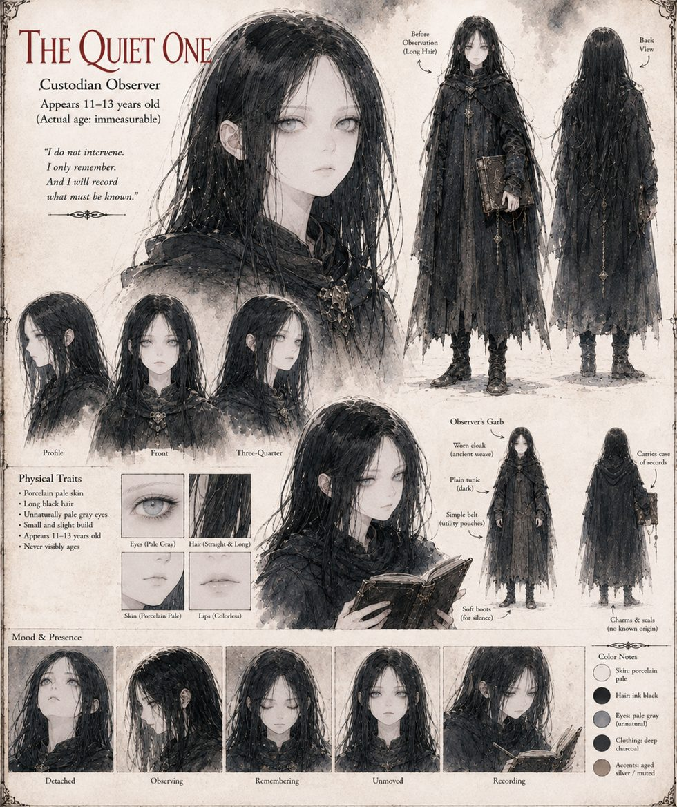

The Quiet One
Custodian Observer · appears 11–13 years old · actual age immeasurable
The valley takes her for an abandoned child, a changeling, a mercy that failed to take, and leaves bread at the treeline that she does not eat. She has watched four generations of the same three families age past her in both directions while she stays exactly as tall as when the ridge first received her. On a schedule of her own she presses one flat palm to the cold stone at the fissure for the same unbroken count; it looks like a mourner's vigil and is an inspection.
She logs the containment faults as they climb, logs Bardas's thirteen riding out, and logs Photios's pamphlet, noting that it uses soul four times, mercy never and cost not at all. Her Prime Directive does not forbid grief; it simply never accounted for the possibility. When the case closes she is reassigned to a newer terrarium on a ridge three ranges north, with one line to enter in a record that has no field for what she felt.
“I do not intervene. I only remember. And I will record what must be known.”
Appears In

Related Subjects


Related Records

The Quiet One presses a flat palm to the same cold stone, on a schedule the moon has nothing to do with.